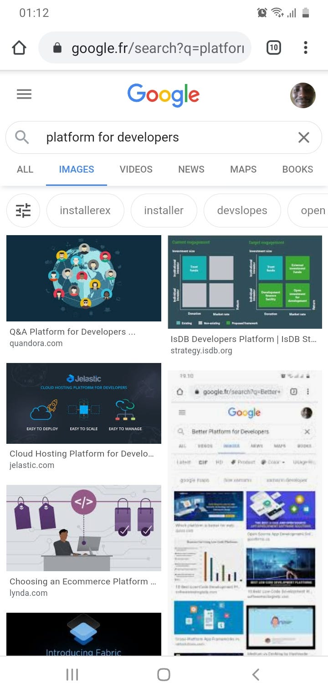

Nov 13, 2020
A Better Platform for Developers
There is for sure a lack of platforms that connect passionates developers. A platform where they will like to spend their time all day long having all the tool they need without leaving it. A platform that empowers them and let them improve their skills. If I think simply I could say that these platforms exist and are what we know as operating systems like Linux, windows and osx .... Why not this more flexible and specialised platform that helps developers work smarter and ship coding projects faster. Why developpers arround the world are still crafting ideas alone?
why developers are still location constrained?
There is always a path for doing better. This can be the best platform for developers to get things done and to spread ideas.
